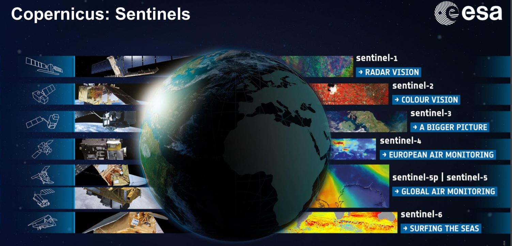
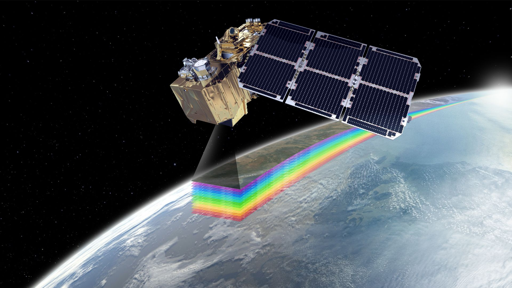
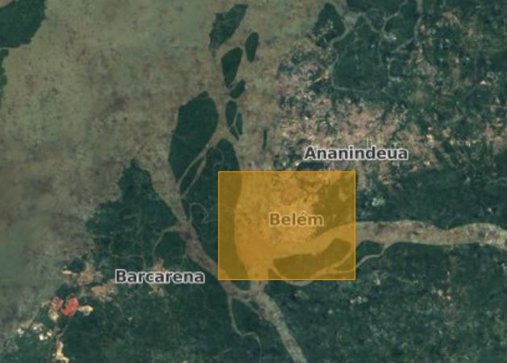
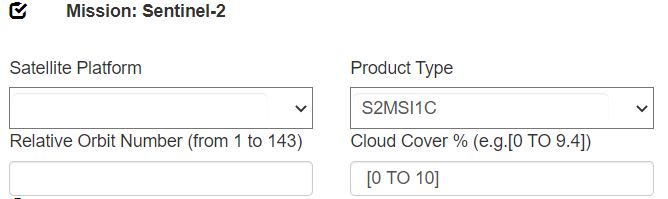
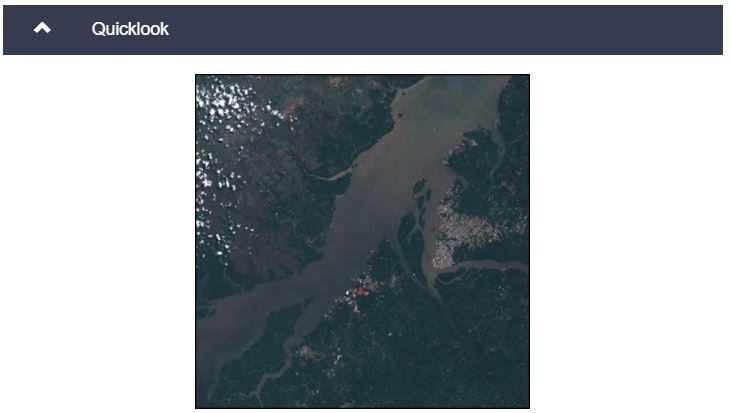

Sentinel-2 intro and download
The ESA Copernicus programme
Copernicus is the EU's Earth Observation Programme, looking at our planet and its environment for the ultimate benefit of all European citizens. The overall goal is achieving a global, continuous, autonomous, high quality, wide range Earth observation capacity.
Under the copernicus programme, ESA is developing a series of next-generation Earth observation missions under the name of 'Sentinel' programme. This Sentinel Programme, consists of multiple satellites, each focussing on a different aspect of Earth observation: atmospheric, Oceanic and Land monitoring:
 Current Sentinel satellites, with their main goal. (Source: ESA)
In this practical will focus on the multispectral imagery taken by Sentinel 2 satellites.
The Sentinel-2 mission

Sentinel-2 is the copernicus Earth observation mission by ESA with the goal to perform terrestrial observations in support of services such as forest monitoring, land cover changes detection, and natural disaster management. It consists of two identical satellites, Sentinel-2A and Sentinel-2B. An interesting infograph about the Sentinel-2 mission can be found here.
The Sentinel-2 mission has the following capabilities:
- Multi-spectral data with 13 bands in the visible, near infrared, and short wave infrared part of the spectrum
- Systematic global coverage of land surfaces from 56° S to 84° N, coastal waters, and all of the Mediterranean Sea
- Revisiting every 5 days under the same viewing angles.
- Spatial resolution of 10 m, 20 m and 60 m
- 290 km field of view
- Free and open data policy
To achieve frequent revisits and high mission availability, the two identical Sentinel-2 satellites (Sentinel-2A and Sentinel-2B) operate simultaneously. The orbit is Sun synchronous at 786 km (488 mi) altitude.
Sentinel 2 data download
All data captured by the ESA copernicus Sentinel program are completely freely available to the public. The most convinient way to download Sentinel data is through the Copernicus Open Access Hub, a platform dedicate to provide easy acces to the user. For this, an user account is required.
To register go to registration page. To acces the data hub, go to https://scihub.copernicus.eu/.
Ex 2.1 - Downloading a Sentinel 2 Level 1C image
In the first exercise, you will download an image from the Copernicus Open Access Hub.
- Go to https://scihub.copernicus.eu/
- Klick ‘Open hub’ to access the Interactive Graphical User Interface
-
Log in (or create an account)
-
Zoom to Belèm, a city in the north of Brazil, close to the gateway of the Amazon river
- Switch the ‘Open street’ view to ‘sentinel-2 cloudless + Overlay’ view
- Switch to ‘navigation mode’
-
Draw a rectangle around Belèm:
 -
At the button ‘Insert search criteria’: go for ‘advanced search’
-
Look for a 2021 image (sensing period), Sentinel-2A, level 1C (product type) with a cloud cover of maximum 10%. Then click on the search button:
 -
Click on the search button
- Search for an image that contains the major part of the city (inspect the image in a quick look view ) 
- Download this image to a folder on your computer.
Sentinel file naming convention
The naming of the Sentinel products follows the Compact Naming Convention:
MMM_MSIXXX_YYYYMMDDHHMMSS_Nxxyy_ROOO_Txxxxx_"Product Discriminator".SAFE
Where:
MMM: is the mission ID (S2A/S2B)
MSIXXX: MSIL1C denotes the Level-1C product level/ MSIL2A denotes the Level-2A product level (see ‘radiometric correction’).
YYYYMMDDTHHMMSS: the datatake sensing start time
Nxxyy: the Processing Baseline number (e.g. N0204)
ROOO: Relative Orbit number (R001 - R143)
Txxxxx: Tile Number field
.SAFE: Product Format (Standard Archive Format for Europe)
The products contain two dates. The first date (YYYYMMDDHHMMSS) is the datatake sensing time. The second date is the "Product Discriminator" field, which is 15 characters in length, and is used to distinguish between different end user products from the same datatake. Depending on the instance, the time in this field can be earlier or slightly later than the datatake sensing time.
Thus, the following filename
‘S2A_MSIL1C_20170105T013442_N0204_R031_T53NMJ_20170105T013443.SAFE’
identifies a Level-1C product acquired by Sentinel-2A on the 5th of January, 2017 at 1:34:42 AM. It was acquired over Tile 53NMJ(2) during Relative Orbit 031, and processed with PDGS Processing Baseline 02.04.
Ex 3.2 - naming convention
- Explain the different components of the name: S2A_MSIL1C_20180812T143751_N0206_R096_T19KGA_20180812T182110 (example)
Other useful RS data sources
Earth Explorer
ESA has Sentinel-2, NASA has Landsat. However Landsat has a lower spatial resolution of 30m compared to the 10m of Sentinel-2 and Sentinel 2 has more spectral bands, Landsat imagery is probably the most used EO-data in science. This is because the Landsat program is the longest-running Earth Observation program of the entire Earth. Landsat-1 was already launched on July 23, 1972 resulting. Due to this difference, Landsat is on this moment more useful for historic land-change assessments than Sentinel-2 (launched in 2015).
Landsat data is also freely avaible to the public. For this, the United States Geological Survey has created a data portal with extensive collections of EO data, with Landsat satellite imagery, Radar data, UAS data, digital line graphs, digital elevation model data, aerial photos, Sentinel satellite data, ...
Link: earthexplorer.usgs.gov
Other data sources
Following website contains a nice overview of online free EO data sources: https://www.geoawesomeness.com/list-of-top-10-sources-of-free-remote-sensing-data/